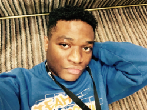

Banks' World Website
About me/Team members
Isaac
My name is Ikenna Isaac Okereke from Northwest London. And this is my Website. I am 19 years old and I can tell you little about me. Most people are still figuring out their life at this stage, 5years from now I know where I want to be and how to get there, let me say 5 years is the maximum meaning it’s too much to get where I ought to be. I have been through a lot for a 19-year-old, life has taught me well so far how to be patient and working smart not just working is the key to result. Due to my past experiences I can fully agree that in most situation there is a light at the end of the tunnel, people do change its no surprise and we must prepare ourselves for such occurrence in life. I do enjoy playing basketball, football and videos games. I have been supporting Arsenal football since 2007 although to support a club like Arsenal comes with the 2ps. which are patient and perseverance. I have been working since I was 17yrs old my first job was at Burger king which didn’t last for a month, then I also got a job at SSPUK working in a Restaurant/Bar which also didn’t last for 2 months. Now I am working with 2 agency called SYFT and ARC HOSPITALITY, where I work at events such as stadiums for football matches, concerts, racecourse, parties serving food and drinks to customers.
Andrei

This is Andrei Nicolae Paun he studies computing at the University of Northampton. He comes from Corby, but originally, he is from Romania. Andrei is one of those computer geeks who can spend hours on the computer. He also spends hours on games, you may be wondering how I know about such information? only because he is my flatmate at park Campus in our residential student halls. Andrei aims to one-day work for Google incorporation, this was from a discussion we had once, and by next year he will be specialising on Software Engineering as his pathway .
Gabriel

This is Gabriel who studies General computing at the University of Northampton. He lives at Luton, although Gabriel is still finding what pathway he wants to focus on next year, mobile computing and networking seems to be playing on his mind. Gabriel can be perceived as a reserved individual. Prior to year he had one year in Journalism which he decided wasn’t for him, so he decided to get into the computing world and hopefully find his career path. in all i have come to know Gabriel as a very hardworking individual and dedicated .